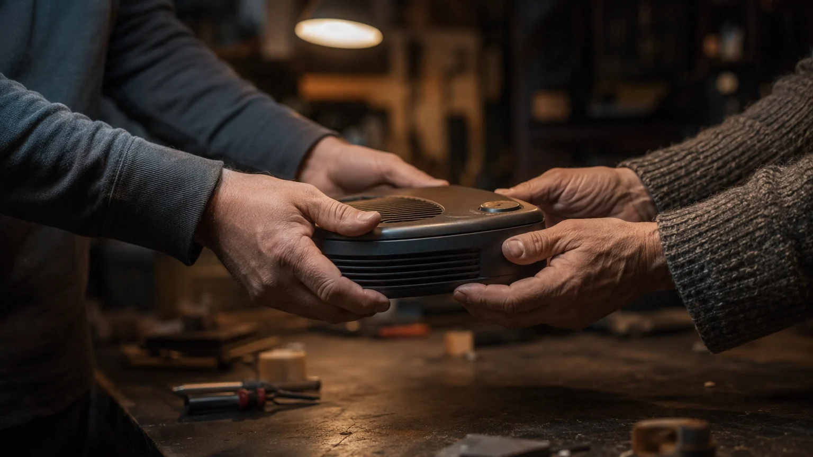

JAMAL / 唐哲马
Business first.
AI where it matters.
AI 产品经理 · 电商智能客服与服务体验
在阿里巴巴店小蜜做 AI 产品，曾在拼多多建设智能客服与服务体验。把真实业务问题，变成可执行、可验证的产品。
VIBE
一些 Vibe
从智能客服与 AI Agent，到音乐创作。用具体实践，解释我怎样做产品。


AURORA 2.0 / 个人产品实验
把此刻的心情，交给一个专属 DJ。
从一句心情到一段音乐，把选歌、连续聆听与视觉氛围，做成一个愿意停留的空间。
走进 Aurora 的创作手记 ↗TZBABY / AI MUSIC
走进我的音乐作品 ↗我也把想象，做成了唱片。
以 TZBABY 的名字，用 AI 创作音乐。五张专辑与 EP，已发布在网易云音乐。


PERSPECTIVES
思考与方法

AI 时代，大学应该学什么？
答案越来越容易获得，大学更应该帮助我们形成那个能够提问、辨别、选择和继续学习的人。

如何成为一名合格的 AI PM：从理解问题，到为产品判断负责
理解值得解决的问题，解释能力与方案的取舍，让设计可靠落地，再用证据检验结果。

把判断变成可验证的行动
研究不是把问题再描述一遍。证据怎样支持选择，选择怎样进入实现，结果怎样被验证？
懂业务的人，才知道 AI 该用在哪
“我要退款”只有四个字。真正的产品问题，藏在这四个字之后。

售后 Agent 的价值，是让事情真正往前走
会解释、会执行、能判责与能闭环，是四个不同的问题。用安装、凭证与工单拆开它们。

我的 AI 工作系统：如何让一次经验变成下一次的能力
把值得保留的经验变成可调用、可检查、可更新的规则，为下一次工作留下可靠的起点。
ABOUT
Jamal
我是唐哲马（Jamal），在阿里巴巴店小蜜做 AI 产品，关注售后、发货物流与商家服务。此前在拼多多，从智能客服建设走向团队管理与高价值服务体验。
我把自己看作业务与 AI 之间的翻译者。也把实践整理成 AI 产品训练课程，在真实交付里检验理解。
完整档案：用我做过的产品讲我自己→PRINCIPLES
我做判断的四个原则
- 01
先理解业务
从用户真正要办的事出发，判断 AI 在哪里能产生价值。
- 02
让证据可追溯
分清事实、推断与统计口径，也保留还没有成立的解释。
- 03
用状态证明完成
草稿、提交与完成分别验证，让承诺接到真实结果。
- 04
在行动里迭代
让结论进入责任与验收，保持好奇，也保留自己的判断。
LET’S TALK
聊聊产品与创作 ↗聊聊一个值得解决的问题。
AI 产品、智能客服、服务体验，或 AI 产品实战教学。欢迎带着具体的问题交流。